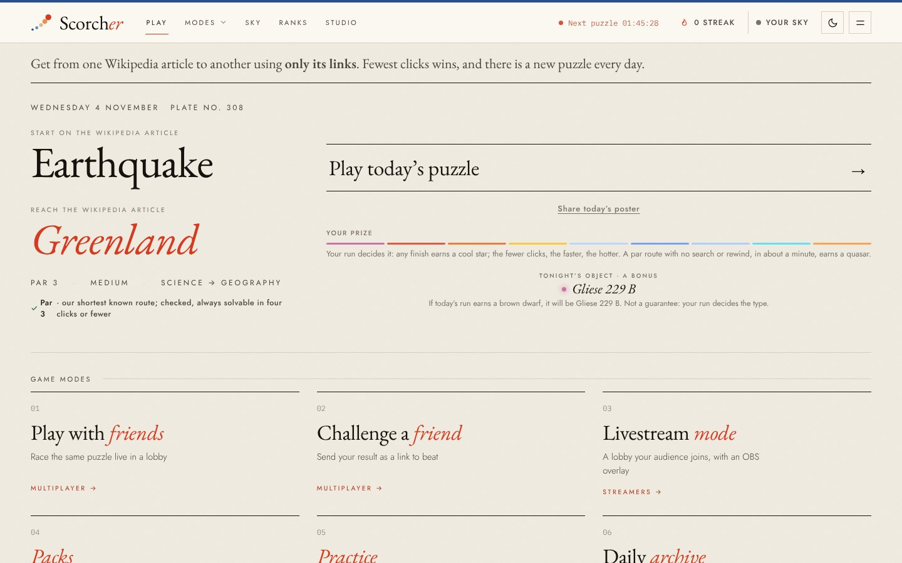
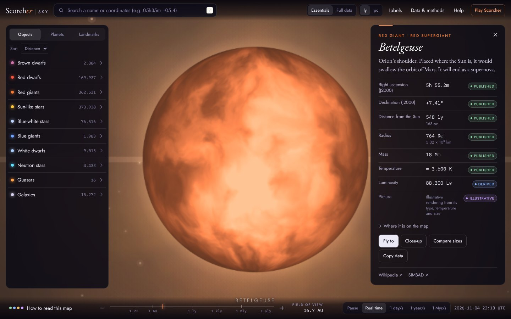
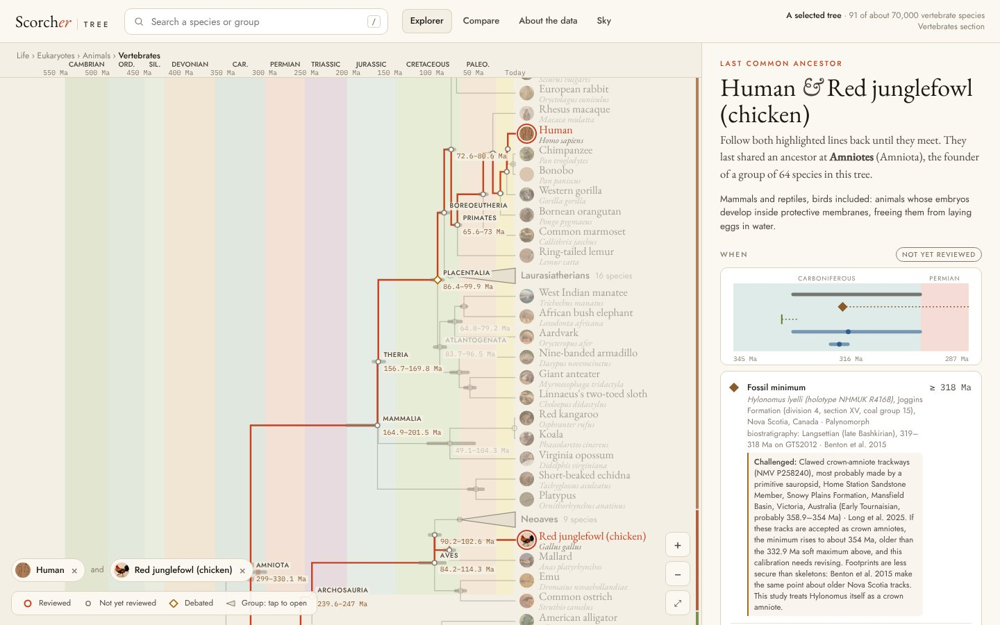

Science you can check.
A daily game, and tools for exploring the universe, life and energy, where every number shows where it came from.
Betelgeuse is 548 light-yearspublishedA literature value, rounded. Its SIMBAD record lists the primary references. away, 764 timespublishedPublished radius in solar radii; estimates for this star vary widely. the Sun’s width, and shines 88,300 timesderivedCalculated here with the Stefan–Boltzmann law from its radius and its 3,600 K temperature. as brightly.
Race
Get from one Wikipedia article to another using only links. A new puzzle every day.
Live · freeSky
Nearly a million real stars and 15,000 galaxies at their true distances.
Live · freeTree
How every vertebrate is related, with the fossils and clocks behind each branch.
Live · freeBuild
Test AI agents on your own engineering work before you pay for them.
Pilots 2027Five minutes of curiosity, every day.
Race through Wikipedia using only links. The page warms as you get closer. Good routes earn real stars, galaxies and quasars for your own sky.

The daily race, live today
The universe, at its true scale.
Zoom from a neutron star to the most distant quasars. Tap any star for what is measured about it, and what is only a picture.
- Real stars from Gaia and Hipparcos992,000
- Galaxies at their measured distances15,272
- Pulsars4,418

Betelgeuse in Scorcher Sky, every value labelled
Find the ancestor you share with a chicken.
Pick any two animals and follow their lines back to their last common ancestor, with the fossils, the clocks and the papers behind each date.
- Vertebrate species, photographed91
- Branch points dated from the literature84 of 90
- Citations checked against Crossref8 of 8

Human and chicken: their last common ancestor, Amniota
Prove an agent on your own work.
For engineering and energy firms: test your agent or ours on real tasks in QGIS, seismic, drilling, solar and wind, against how your team works today. Subscribe only if it pays.
Synthetic seismic section, generated in the page
Learn the why.
With Demosthenes Academy, every star and branch point will link to lessons and practice: how a parallax works, how a molecular clock is calibrated, why a fossil only gives a minimum age.
PlannedUse the data.
A public, read-only API for stars, galaxies and tree nodes, each value with its source, label and licence.
# planned, not live GET /api/v1/tree/node/amniota { "name": "Amniota", "fossilMin": { "ma": 318, "label": "published", "cite": "Benton et al. 2015" } }
Curious? Start with today’s race.
Play today’s race